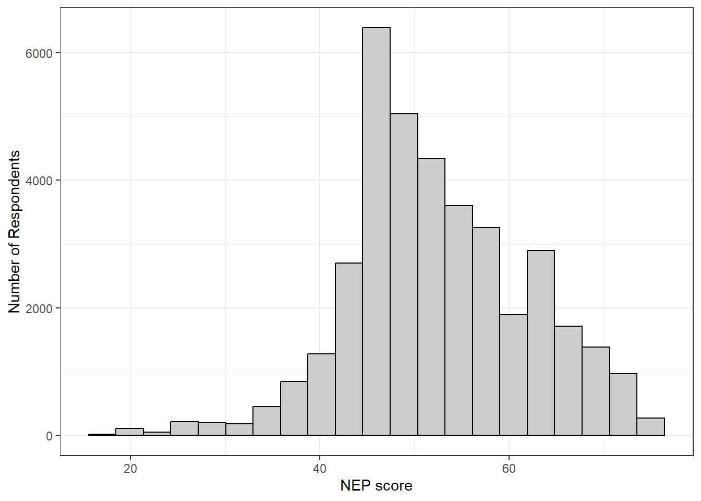

library(tidyverse) #hi
library(haven)
library(knitr)
everglades <- read_dta("LCM_4classes_data.dta")Replication Project
Load in Data
Histogram of Aggregate NEP Scores
everglades |>
# group_by(respondentid) |>
#summarize(
# mean_nep = mean(nep)
# ) |>
ggplot(mapping = aes(x = nep)) +
geom_histogram(fill = "grey80", color = "black", bins = 21) +
theme_bw() +
labs(
x = "NEP score",
y = "Number of Respondents"
)
Summary Statistics
everglades |>
summarize(
Respondents = n_distinct(respondentid),
"Choice Sets" = n_distinct(groupid),
Alternatives = n(),
"Alternatives Per Set" = Alternatives / `Choice Sets`,
"Chosen Options" = sum(choice)
) |>
pivot_longer(cols = everything(),
names_to = "Variable") |>
rename(
"Number of Observations" = "value"
)# A tibble: 5 × 2
Variable `Number of Observations`
<chr> <dbl>
1 Respondents 2100
2 Choice Sets 12599
3 Alternatives 37797
4 Alternatives Per Set 3
5 Chosen Options 12599everglades %>%
group_by(option) %>%
summarise(
n = n(),
chosen = sum(choice),
choice_share = mean(choice)
)# A tibble: 3 × 4
option n chosen choice_share
<dbl+lbl> <int> <dbl> <dbl>
1 1 [A] 12599 4082 0.324
2 2 [B] 12599 4519 0.359
3 3 [C] 12599 3998 0.317everglades %>%
group_by(groupid) %>%
summarise(
n_alternatives = n(),
n_chosen = sum(choice),
.groups = "drop"
) %>%
count(n_alternatives, n_chosen)# A tibble: 1 × 3
n_alternatives n_chosen n
<int> <dbl> <int>
1 3 1 12599respondents <- everglades %>%
distinct(
respondentid,
female, age, income, education, college, race, spanish,
nep, nocost, difficultchoice, nogovt, nopay, politics
)
respondents# A tibble: 2,100 × 14
respondentid female age income education college race spanish nep
<dbl> <dbl+lbl> <dbl> <dbl+lb> <dbl+lbl> <dbl+l> <dbl+l> <dbl+l> <dbl>
1 1 1 [yes] 34 9 [$16… 5 [Bache… 1 [col… 2 [Asi… 0 [No] 53
2 2 0 [no] 20 1 [Les… 2 [High … 0 [no … 3 [Bla… 0 [No] 43
3 3 1 [yes] 35 8 [$14… 5 [Bache… 1 [col… 5 [Whi… 1 [Yes] 43
4 4 0 [no] 55 3 [$40… 2 [High … 0 [no … 5 [Whi… 1 [Yes] 45
5 5 0 [no] 22 2 [$20… 8 [Docto… 1 [col… 5 [Whi… 1 [Yes] 62
6 6 0 [no] 65 11 [$20… 6 [Maste… 1 [col… 2 [Asi… 0 [No] 65
7 7 1 [yes] 56 6 [$10… 6 [Maste… 1 [col… 5 [Whi… 1 [Yes] 50
8 8 0 [no] 68 8 [$14… 6 [Maste… 1 [col… 1 [Ame… 0 [No] 69
9 9 1 [yes] 60 4 [$60… 3 [Some … 0 [no … 3 [Bla… 0 [No] 63
10 10 0 [no] 59 4 [$60… 2 [High … 0 [no … 3 [Bla… 0 [No] 41
# ℹ 2,090 more rows
# ℹ 5 more variables: nocost <dbl+lbl>, difficultchoice <dbl+lbl>,
# nogovt <dbl+lbl>, nopay <dbl+lbl>, politics <dbl>respondents %>%
summarise(
n = n(),
female_mean = mean(female, na.rm = TRUE),
age_mean = mean(age, na.rm = TRUE),
age_sd = sd(age, na.rm = TRUE),
income_mean = mean(income, na.rm = TRUE),
college_share = mean(college, na.rm = TRUE),
nep_mean = mean(nep, na.rm = TRUE),
nep_sd = sd(nep, na.rm = TRUE),
difficult_choice_share = mean(difficultchoice, na.rm = TRUE),
no_pay_share = mean(nopay, na.rm = TRUE)
)# A tibble: 1 × 10
n female_mean age_mean age_sd income_mean college_share nep_mean nep_sd
<int> <dbl> <dbl> <dbl> <dbl> <dbl> <dbl> <dbl>
1 2100 0.511 49.1 16.6 4.25 0.520 52.5 9.50
# ℹ 2 more variables: difficult_choice_share <dbl>, no_pay_share <dbl>respondents %>%
select(
female, age, income, college, race, spanish,
nep, nocost, difficultchoice, nogovt, nopay, politics
) %>%
pivot_longer(
cols = everything(),
names_to = "Variable",
values_to = "Value",
names_repair = "minimal"
) |>
group_by(Variable) %>%
summarise(
`Mean / Share` = mean(Value, na.rm = TRUE),
SD = sd(Value, na.rm = TRUE),
Min = min(Value, na.rm = TRUE),
Max = max(Value, na.rm = TRUE),
.groups = "drop"
)Warning: `female` and `income` have conflicting value labels.
ℹ Labels for these values will be taken from `female`.
✖ Values: 1Warning: `female` and `college` have conflicting value labels.
ℹ Labels for these values will be taken from `female`.
✖ Values: 0 and 1Warning: `female` and `race` have conflicting value labels.
ℹ Labels for these values will be taken from `female`.
✖ Values: 1, 2, 3, 4, 5, 6, and 7Warning: `female` and `spanish` have conflicting value labels.
ℹ Labels for these values will be taken from `female`.
✖ Values: 0 and 1Warning: `female` and `nocost` have conflicting value labels.
ℹ Labels for these values will be taken from `female`.
✖ Values: 0, 1, and 2Warning: `female` and `difficultchoice` have conflicting value labels.
ℹ Labels for these values will be taken from `female`.
✖ Values: 0, 1, and 2Warning: `female` and `nogovt` have conflicting value labels.
ℹ Labels for these values will be taken from `female`.
✖ Values: 0, 1, and 2Warning: `female` and `nopay` have conflicting value labels.
ℹ Labels for these values will be taken from `female`.
✖ Values: 0, 1, and 2# A tibble: 12 × 5
Variable `Mean / Share` SD Min Max
<chr> <dbl> <dbl> <dbl+lbl> <dbl+lbl>
1 age 49.1 16.6 18 94
2 college 0.520 0.500 0 [no] 1 [yes]
3 difficultchoice 0.213 1.27 -2 [Strongly Disagree] 2 [$20,000 to …
4 female 0.511 0.500 0 [no] 1 [yes]
5 income 4.25 2.62 1 [yes] 11 [$200,000 or…
6 nep 52.5 9.50 17 75
7 nocost 0.274 1.35 -2 [Strongly Disagree] 2 [$20,000 to …
8 nogovt 0.980 1.06 -2 [Strongly Disagree] 2 [$20,000 to …
9 nopay 0.251 1.34 -2 [Strongly Disagree] 2 [$20,000 to …
10 politics 0.282 1.55 -3 3 [$40,000 to …
11 race 4.66 1.05 1 [yes] 7 [$120,000 to…
12 spanish 0.275 0.447 0 [no] 1 [yes]